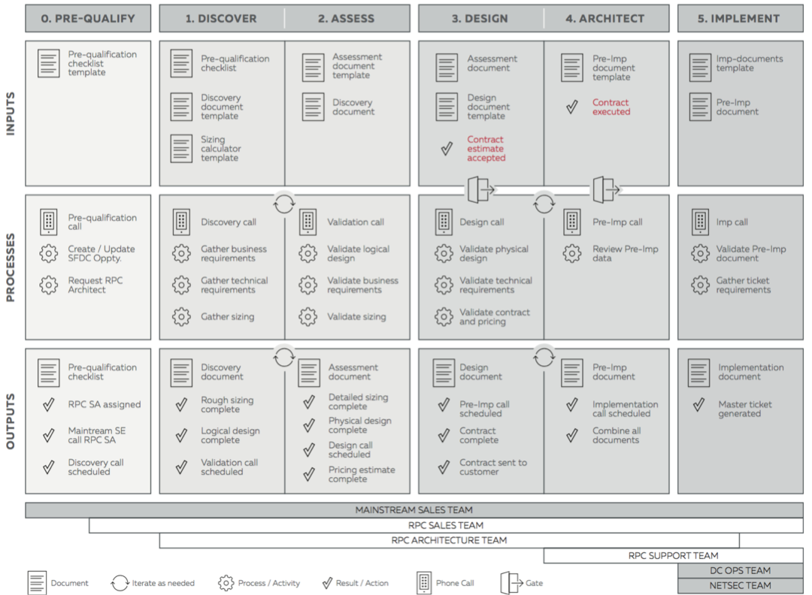

What an engagement with Rackspace looks like#
This design is a very generic general solution that takes the very high level basic requirements for IaaS. For many, if not most companies, they would need a cloud tailored to their specific applications and requirements. For that we would go through a process similar to the one below.
Methodology#
The RPC Delivery Methodology is a core component of the Rackspace solution design.
Gathering requirements#
Within and throughout the RPC delivery methodology we use the “Nine Block” Requirement Gathering Framework as a core component of the Rackspace solution design methodology. Within each customer engagement, the use of this framework may differ. Keep in mind that each “Block” may not be used to design a customer solution due to their preferences.
| Service quality management | Capacity management | Standard operating environment |
|---|---|---|
| Service quality management is the appropriate level of performance, availability, and functionality of a solution that meets the customer’s business and technical needs of an organization and maintains agreed upon service levels. | Capacity management is the processes, policies, and technologies, which create and maintain suitable resource and service capacity to meet the demands of the customer’s business in a cost effective manner. | The Standard operating environment is the standard architectures, applications, operating environments, test frameworks, methodologies, procedures, and terminologies used to enhance consistency and manageability within an organization. |
| Availability management | Data management | System management |
| Availability management is the set of the processes, policies, and technologies that determine the availability of IT services as they relate to the business needs of the customer. | Data management is the processes, policies, and technologies that control, protect, deliver, and enhance the value of data and information assets critical to the business needs of the customer. | System management is the people, processes, policies, and technologies used to manage and maintain the business IT environment. |
| Continuity management | Information security management | Operational readiness |
| Continuity management is the set of processes, policies, and technologies used to enable recovery or continuation of customer business processes after situations that impact business-critical IT services. | Information security management is the control of access to the customer’s information and information systems and the protection of these systems from unauthorized access, use, and disruption. | Operational readiness is a measure of an organization’s existing knowledge and processes as they relate to platform and application knowledge, support and escalation processes, and over all familiarity with the IT service. |